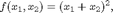
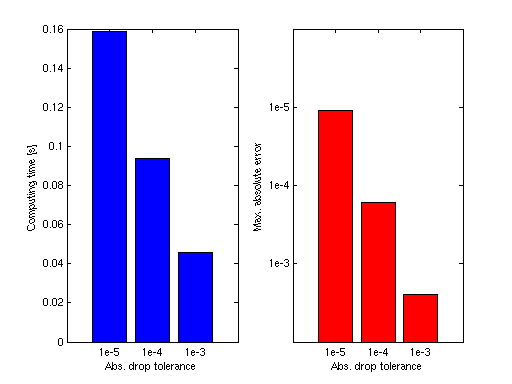

Improving Performance
The aim of this section is to provide an overview on how to optimize the performance of the Sparse Grid Interpolation Toolbox.
Contents
Vectorizing the objective function
Vectorizing the objective function is most beneficial if the function evaluations are very cheap, in the order of less than
1/100 s. In this case, providing a vectorized function can improve the performance of the spvals function. Consider the following
function

and the following two m-files implementing it:
type fun.m
function y = fun(x1, x2) y = x1 * x2; y = y^2;
type fun_vec.m
function y = fun_vec(x1, x2) y = x1 .* x2; % Use '.' before any '^', '*' or '/' to enable y = y.^2; % vectorized evaluation of expressions
The first m-file allows for evaluation at a single real-valued point only, the second one permits vectorized evaluation. Since
in case of cheap functions, the function calls in Matlab represent a significant overhead, the function evaluation part of
the spvals algorithm is much slower if the non-vectorized form is used. This is demonstrated by the following code.
tic, z1 = spvals('fun',2); toc; tic, z2 = spvals('fun_vec',2,[],spset('Vectorized','on')); toc; z1.fevalTime z2.fevalTime
Elapsed time is 0.112452 seconds.
Elapsed time is 0.069006 seconds.
ans =
0.1021
ans =
0.0480
Reusing previous results
An important feature of the toolbox is that you do not have to discard previously computed results. A "best practice" is, therefore, to embed the interpolant construction in a loop. Proceeding in this way has two advantages: First, it gives the user a maximum of control in monitoring the decay of the estimated interpolation error. Second, it makes it possible to start with a low number of required points, and to increase this number slowly if the targeted accuracy is not yet achieved. There are several examples on how to implement such a loop in the provided demos. See, for instance, spadaptanim.m or spcompare.m in the examples directory.
A small example on implementing dimension-adaptive interpolant construction in a loop is provided below.
np = 2; z = []; options = spset('Vectorized', 'on', 'DimensionAdaptive', 'on', ... 'RelTol', inf); while np < 4000 options = spset(options, 'PrevResults', z, 'MinPoints', np, 'MaxPoints', np); z = spvals('fun_vec',2,[],options); np = z.nPoints; disp(['np = ' num2str(np) ', e_rel = ', num2str(z.estRelError)]); np = np * 2; end
np = 5, e_rel = 0.75 np = 13, e_rel = 0.5625 np = 29, e_rel = 0.046875 np = 73, e_rel = 0.011719 np = 177, e_rel = 0.0029297 np = 417, e_rel = 0.00073242 np = 897, e_rel = 6.1035e-05 np = 1921, e_rel = 4.5776e-05 np = 4097, e_rel = 3.8147e-06
Purging interpolant data
Since version v3.2 of the toolbox, a new function called sppurge is available. This function serves to "purge" or "clean up" the interpolant data from subgrids that do not contribute significantly to the result. This is done by introducing a drop tolerance that is applied to the hierarchical surpluses. Subgrids where the absolute value of all hierarchical surpluses fall below this drop tolerance are marked and neglected during the interpolation process. By default, very conservative purging parameters are used, guaranteeing that the accuracy of the interpolation will not be affected up to about the 12th significant digit. However, if the accuracy requirements are lower, the user may use higher drop tolerances, and thus, trade improved interpolation speed against lower accuracy. This is illustrated by the following example.
We assume that an interpolant was computed for the function fun_vec by the code above with 4097 points, using piecewise multilinear basis functions. The following code generates a plot that shows the time required to compute 1000 randomly sampled points for different drop tolerances. The maximum absolute error is shown for comparison. This example only uses absolute drop tolerances (the relative drop tolerance is set to zero).
% Define drop tolerances dropTols = [1e-5, 1e-4, 1e-3]; % Generate 1000 random points rand('state',0); x = rand(1000,1); y = rand(1000,1); % Compute exact function values f_exact = fun_vec(x,y); e = zeros(3,1); t = zeros(3,1); for k = 1:3 % Purge interpolant with drop tolerance z = sppurge(z,spset('DropTol', [dropTols(k), 0])); % Interpolate and measure time tic, ip = spinterp(z, x, y); t(k) = toc; % Compute maximum error e(k) = max(abs(f_exact - ip)); end % Plot results subplot(1,2,1); bar(t, 'b'); set(gca,'XTickLabel', {'1e-5','1e-4','1e-3'}) xlabel('Abs. drop tolerance'); ylabel('Computing time [s]'); subplot(1,2,2); bar(log10(e), 'r'); set(gca,'XTickLabel', {'1e-5','1e-4','1e-3'}) set(gca,'YDir','reverse'); set(gca,'YLim', [-6 -2]); set(gca,'YTick',[-5 -4 -3]); set(gca,'YTickLabel', {'1e-5','1e-4','1e-3'}) xlabel('Abs. drop tolerance'); ylabel('Max. absolute error');
For another example using the default relative drop tolerance, see sppurge.
Vectorized interpolant evaluation
The spinterp function is designed for vectorized evaluation. Since the sparse grid algorithm involves more computational overhead than other, simpler interpolation methods, and due to the fact that Matlab is relatively slow if many function calls are performed (since it is an interpreted language), it is recommended to evaluate as many interpolation points at a time as possible. The following code illustrates non-vectorized vs. vectorized evaluation at 1000 points for the interpolant from above.
% Non-vectorized interpolation tic for k = 1:1000 ip = spinterp(z,x(k),y(k)); end toc % Vectorized interpolation tic, ip = spinterp(z,x,y); toc
Elapsed time is 2.526127 seconds. Elapsed time is 0.045744 seconds.